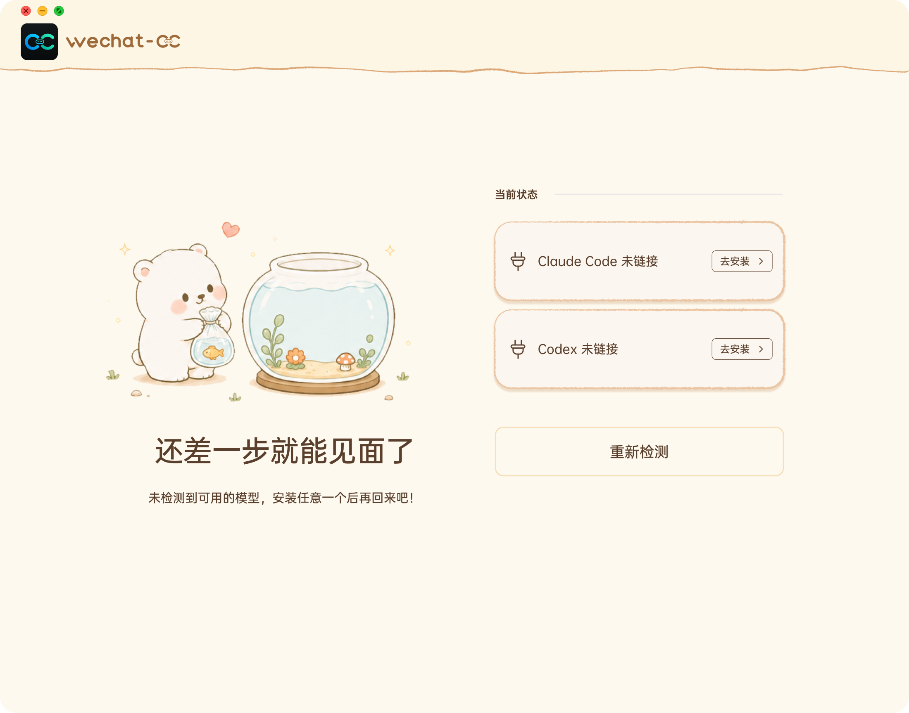
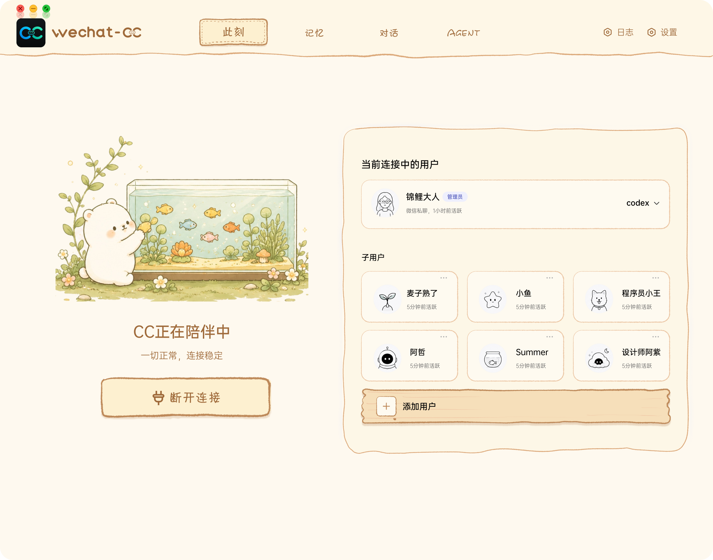
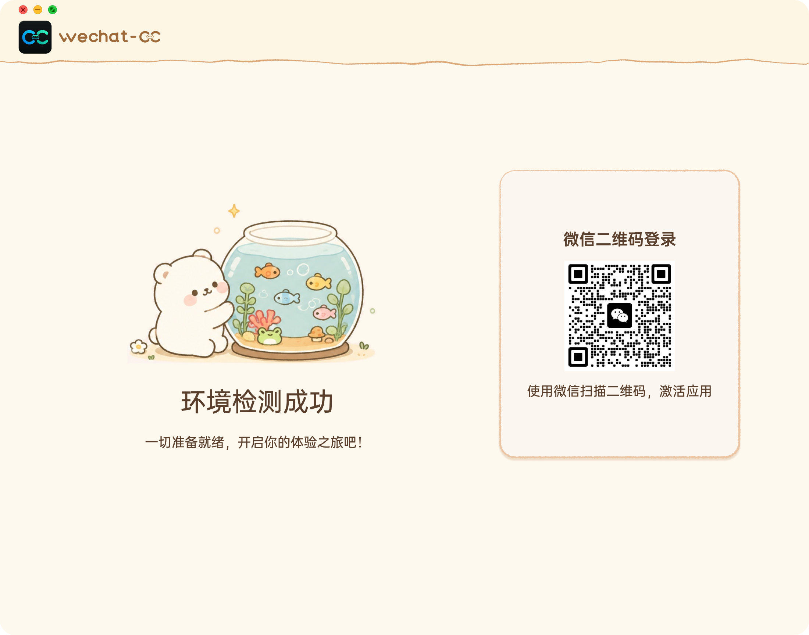
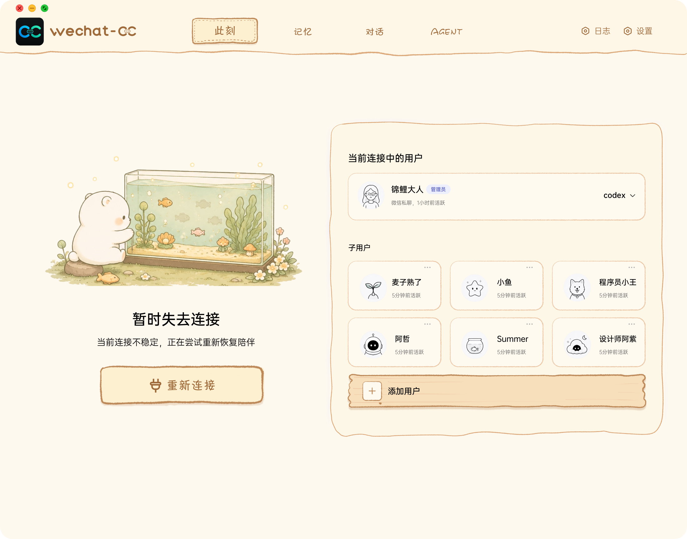
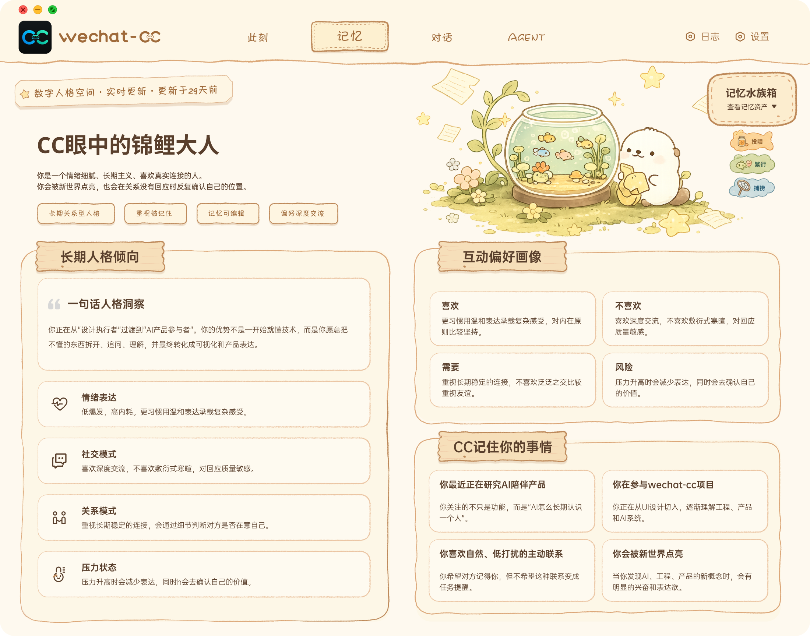
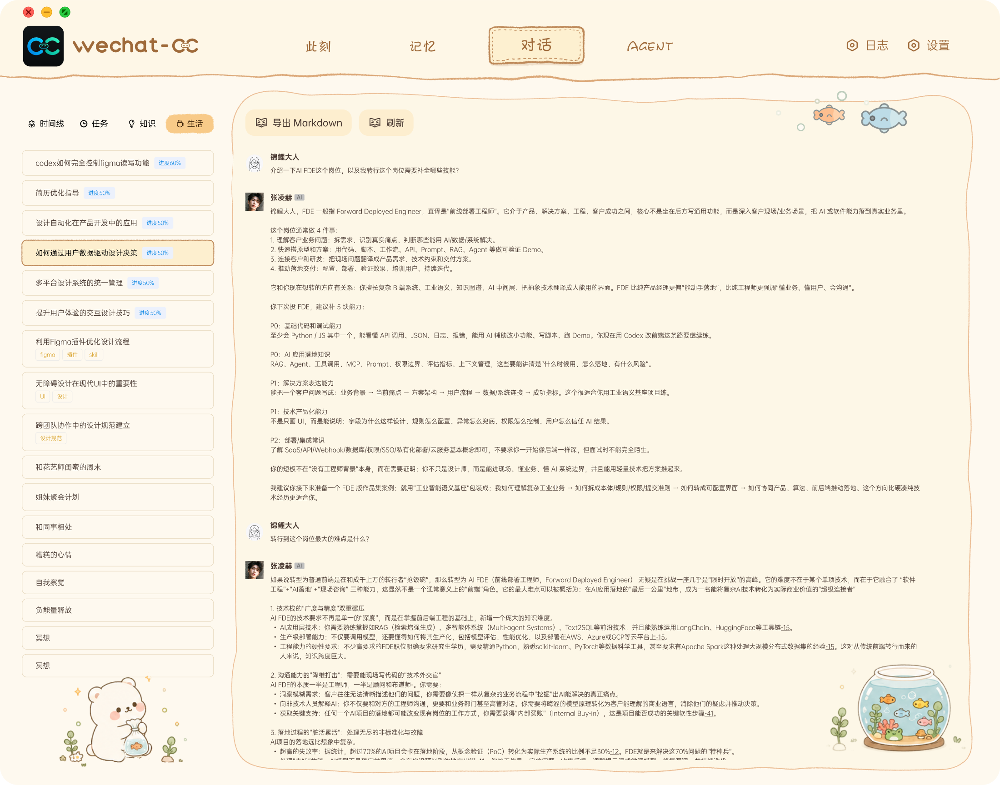

未检测到模型
当 Claude Code 或 Codex 没有安装时，界面不只报错，而是明确告诉用户还差哪一步。
Wechat Gateway · Desktop AI Runtime · Companion UI
一个把微信变成远程 AI 工作入口的中间层产品。它连接用户、微信、桌面电脑、Claude Code、Codex 和本地项目，让人在离开电脑时，也能发起任务、切换模型、查看状态、恢复连接，并让 AI 记住长期上下文。

Product Question
Wechat-CC 不是一个单纯的聊天界面，而是一个远程 AI 协作中间层。产品难点在于：用户需要知道当前谁连接着、 用哪个模型、任务有没有在执行、连接断了怎么恢复、AI 如何记住人与项目的长期上下文。
Runtime States

当 Claude Code 或 Codex 没有安装时，界面不只报错，而是明确告诉用户还差哪一步。

检测成功后进入微信扫码登录，让用户知道系统已经准备好，可以进入真实协作。
Core Interfaces
这个界面让用户知道当前连接的是谁、使用哪个模型、有哪些子用户正在陪伴。它把“后台服务是否正常” 转译成用户能看懂的陪伴状态。
未来这块插画会继续动态化：小鱼在鱼缸里自然游动，用户可以把鱼缸拖到桌面，或发送到手机屏幕， 让 CC 与用户的连接从“打开网页查看”变成更频繁、更贴身的陪伴。

断连不是终点，而是可恢复状态；用户能看到当前连接对象、子用户和重新连接入口。
记忆页把用户画像、长期偏好、关系模式和最近事项沉淀下来，让 AI 不只是响应一次消息， 而是逐渐理解一个人。

对话页承接长文本、任务清单、知识标签和导出能力，让微信里的讨论能继续进入项目协作。

Memory Aquarium
用户和 CC 的对话里，系统会先提取值得长期保留的内容，沉淀为记忆本体。这个本体不会直接以鱼的形式展示， 而是先留在记忆库里，作为后续调用和陪伴的底层内容。
鱼只是记忆的可视化载体。用户可以把领取出来的小鱼放进自己的水族箱，让长期关系有一个可以看见、 可以照看的外显空间。
聊天消耗的 token 会转化成鱼食，作为持续互动的可感知资源。随着鱼越来越多，水族箱需要被整理， 用户可以通过捕捞和放生，把不再需要长期展示的内容从可视空间里移走。
这条故事线还会延伸到“此刻”的动态鱼缸：鱼缸未来可以被拖到桌面或手机屏幕上，成为一个持续可见的陪伴入口， 让 CC 与用户的连接从一次性页面停留，变成更长期的关系场景。
我更关注的不是单次对话结果，而是记忆、关系和状态如何在一个界面里长期存在：什么值得记，怎么展示， 怎么让用户感知，怎么删除或修正，以及怎么让系统持续变得更懂人。
对话中值得长期保留的内容进入记忆库，形成长期上下文。
记忆以小鱼的形式外显，变成可领取、可照看的对象。
聊天消耗转化为鱼食，让互动有可感知的回馈。
当水族箱变满，用户可以整理并移走不再需要长期展示的内容。
Product Structure
先确认 Claude Code、Codex 等能力是否可用，把工程依赖转成清晰的用户状态。
处理扫码登录、当前用户、子用户、断连恢复和模型切换，让远程协作可控。
把微信交流、任务、知识片段和长文本输出组织成可回看、可导出的内容资产。
让记忆以小鱼、水族箱、鱼食和放生的形式被照看，而不是只躺在数据库里。
把动态鱼缸延伸到桌面和手机屏幕，让 CC 的陪伴从工具界面变成持续可见的连接。
My Product Thinking
把工程状态翻译成可理解的用户状态：未安装、已连接、断连、扫码、切换模型。
把单次对话延展成长期关系：用户画像、记忆水族箱、偏好、最近正在做的事。
把远程控制变成可信协作：用户知道当前谁在连接、AI 用什么工具、失败后怎样恢复。